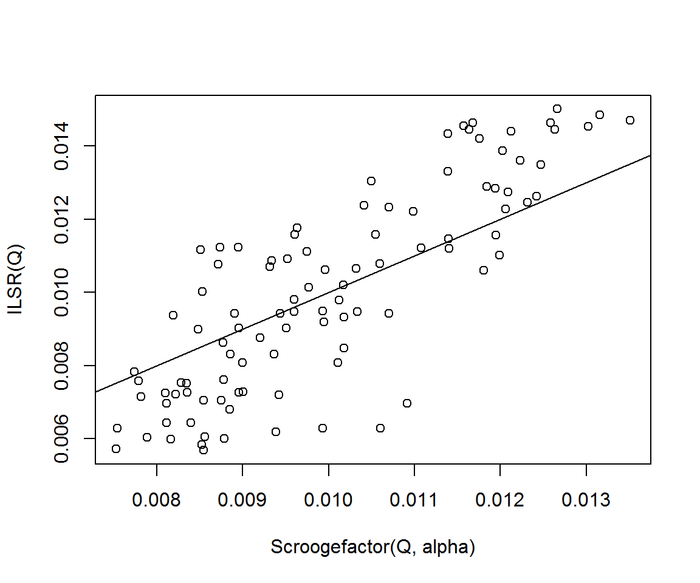
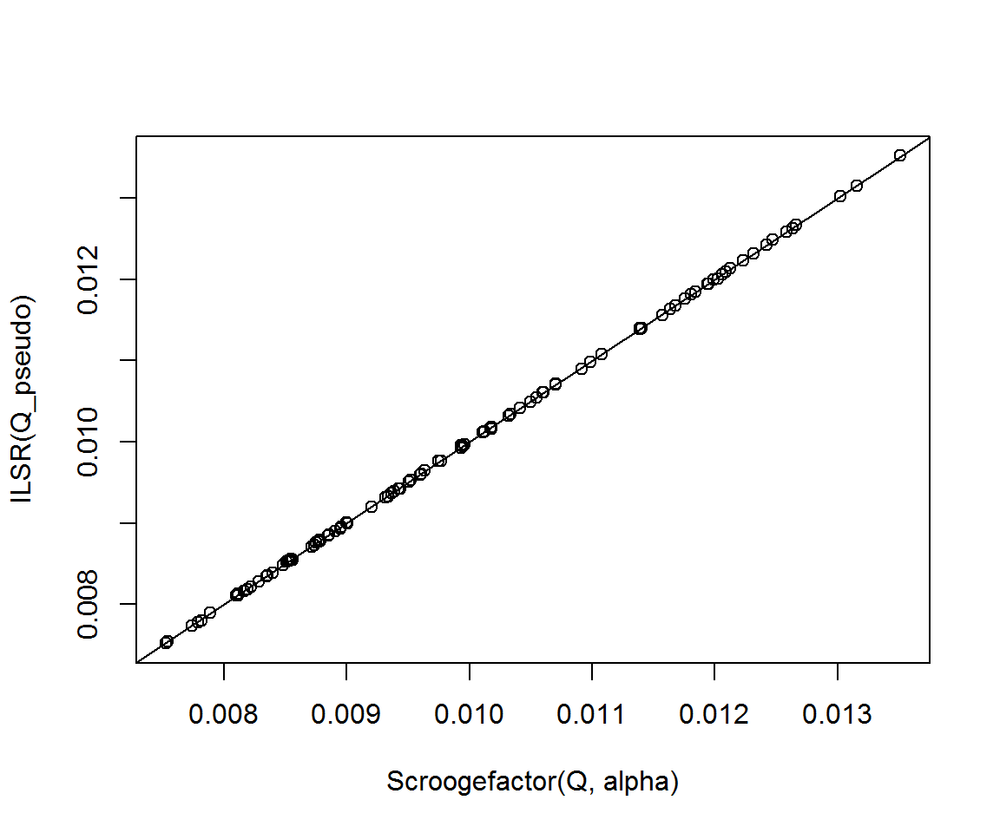

scrooge packageThe scrooge package is a collection of utilities and functions for studying bibliometrics. Install it using
devtools::install_github('Selbosh/scrooge')Then load the package:
library(scrooge)A square matrix \(Q\) is quasi-symmetric if it can be decomposed in the form \(Q = AS\), where \(A\) is diagonal and \(S\) is symmetric. The function rquasisymmetric generates (sparse) quasi-symmetric matrices, with the elements of \(S\) independently sampled from a Poisson distribution and the elements of \(A\) (or the corresponding vector of diagonal elements, \(a\)) sampled from a uniform distribution.
n <- 100
Q <- rquasisymmetric(n)
D <- Matrix::Diagonal(n, Matrix::colSums(Q))The symmetric and diagonal components are saved as attributes of the output.
attr(Q, 'a')
attr(Q, 'S')
# Output hiddenThe Scroogefactor function computes the leading eigenvector of Q / colSums(Q). It is equivalent to PageRank(Q, 1) / colSums(Q). Given a quasi-symmetric matrix, this should extract the vector a exactly. For identifiability, the vector a and the output of Scroogefactor should each sum to one.
SF <- Scroogefactor(Q)
PR <- PageRank(Q, alpha = 1) / Matrix::colSums(Q)
PR <- PR / sum(PR) # Renormalise to sum to 1
all.equal(SF, PR)## [1] TRUEall.equal(SF, attr(Q, 'a'))## [1] TRUEThe quasi-symmetry model is a representation of the Bradley–Terry model. The latter involves computing ‘ability weights’ of sports teams, chess players, academic journals or any other objects involved in paired comparisons. The abilities, estimated via maximum likelihood, are equivalent to the \(a\) scaling vector in the quasi-symmetry model.
Another (not very rigorous) way of putting it might be to say that the \(S\) matrix describes the “undirected” component of the graph (say, the absolute intensity of the connections) and \(A\) describes the “directed” part (the relative ranking).
So far we have chosen the argument alpha = 1 in the PageRank function. This is equivalent to an undamped PageRank, where the probability of a random surfer teleporting during a traversal around the graph is zero. Damping can make the PageRank calculation more stable and help deal with disconnected or non-ergodic components of the network.
For alpha < 1 in PageRank is there an equivalent adjustment that will retrieve exactly the same vector for the Bradley–Terry model?
PageRank involves computing the leading eigenvector of the “Google matrix”,
\[ G := \alpha Q D^{-1} + (1-\alpha) \frac1n e e^T. \]
We know that the Scroogefactor, defined as PageRank per out-link, retrieves the vector \(a\) when \(Q\) is quasi-symmetric and PageRank is undamped. This can be extended to deal with damping, as follows.
So we test this out as follows. (Recall ILSR computes an approximate Bradley–Terry maximum likelihood estimate.)
alpha <- runif(1) # in (0, 1)
Q_pseudo <- alpha * Q + (1 - alpha) * Matrix::Matrix(1, n, n) %*% D / n
plot(Scroogefactor(Q, alpha), ILSR(Q))
abline(0, 1)
cor(Scroogefactor(Q, alpha), ILSR(Q))## [1] 0.8292732plot(Scroogefactor(Q, alpha), ILSR(Q_pseudo))
abline(0, 1)
cor(Scroogefactor(Q, alpha), ILSR(Q_pseudo))## [1] 0.9999874By matrix similarity, damped Scroogefactor \(D^{-1}\pi_\alpha\) is equivalent to calculating the leading eigenvector of \[\widetilde{G} := \alpha D^{-1} Q + (1 - \alpha) \frac1n D^{-1} ee^T D.\] It is easy to see that \(G\) and \(\widetilde{G}\) are similar: \(\widetilde{G} = D^{-1} G D\) and so \(G = D \widetilde{G} D^{-1}\).
In the undamped case, it is easy to show that Scroogefactor (i.e. scaled PageRank) retrieves the true diagonal component of a quasi-symmetric matrix. We know that \(D^{-1} Q\) and \(Q D^{-1}\) are similar, and \(Q D^{-1}\) is column-stochastic so its largest eigenvalue is 1, which means the largest eigenvalue of \(D^{-1}Q\) is also 1.
Here we show that the diagonal component of \(Q\), represented by the vector \(Ae = \mu\) is equal to the leading eigenvector of \(D^{-1} Q\):
\[\begin{aligned} D^{-1}Q \mu &= D^{-1} A S A e \\ &= D^{-1} A (e^T A S)^T \\ &= A D^{-1} D e \\ &= Ae \\ &= \mu. \end{aligned}\]
In other words, the Scroogefactor (eigenvector) retrieves \(A\) exactly in the undamped quasi-symmetric case.
A similar proof is clear using summation notation. A vector \(\tilde\mu\) is an eigenvector of \(D^{-1}Q\) with eigenvalue 1 if and only if the following equation holds: \[ \sum_{j=1}^n q_{ij} \mu_j = \tilde\mu_i \sum_{j=1}^n q_{ji} \hspace{1em}\text{for all $i$}. \]
But if \(Q=DS\) and we choose \(\tilde\mu_i = d_{ii}\) then the left hand side is \[ \sum_{j=1}^n d_{ii} s_{ij} d_{jj} = d_{ii} \sum_{j=1}^n s_{ji} d_{jj} = \tilde\mu_i \sum_{j=1}^n q_{ji}, \] giving the right hand side, as required.
What about the damped case? We want to show that the Bradley–Terry parameter vector (diagonal component) of \(\alpha Q + (1-\alpha)\frac1n ee^T D\) is the leading eigenvector of \(\widetilde{G}\).
However, it is not immediately clear how to write this vector down in closed form (whereas in the undamped case it was simply \(\mu:=Ae\)). Is \(GD\) quasi-symmetric? If so, we could simply substitute \(GD\) for \(Q\) in the equations above and the result would follow.
In general, the sum of two quasi-symmetric matrices is not quasi-symmetric.
We have \[\begin{aligned} GD &= \alpha Q + (1-\alpha)\frac1n ee^T D \\ &= \alpha Q + (1-\alpha)\frac1n ee^T \operatorname{diag}(e^TQ) \\ &= \alpha Q + (1-\alpha)\frac1n ee^T Q \\ &= \left[\alpha I + (1-\alpha)\frac1n ee^T \right] Q \end{aligned}\]
where the operator in the square brackets is symmetric, doubly stochastic and diagonally dominant.
Perhaps there is a more general type of matrices, not necessarily quasi-symmetric to which this relation belongs.
A matrix \(Q\) is symmetrizable if there exists an invertible diagonal matrix \(A\) and a symmetric matrix \(S\) such that \(X = AS\). Symmetrizability appears to be synonymous with quasi-symmetry. The diagonal matrix is called the symmetrizer matrix (Dias, Castonguay, and Dourado 2015).
A matrix \(Q\) is symmetrizable if and only if, for \(k\geq 3\) and any finite sequence \((i_1, i_2, \dots, i_k)\) it satisfies \[q_{i_1 i_2} \cdot q_{i_2 i_3} \cdot \dots \cdot q_{i_k i_1} = q_{i_2 i_1} \cdot q_{i_3 i_2} \cdot \dots \cdot q_{i_1 i_k}. \]
The following algorithm, proposed in Dias, Castonguay, and Dourado (2015), determines whether a matrix is symmetrizable or not and, if so, returns the diagonal matrix \(A\) in \(O(n^2)\) time.
SymmetrizableMatrix <- function(Q) {
stopifnot(length(dim(Q)) == 2 & !diff(dim(Q)))
n <- nrow(Q)
A <- Matrix::Diagonal(n, 0)
TT <- 1:n
iter <- 0
while(length(TT) > 0) {
iter <- iter + 1
if (iter > n^2) stop('Failed to halt')
i <- TT[1]
TT <- TT[-1]
if (A[i, i] == 0) A[i, i] <- 1
for (j in TT) {
if (Q[i, j] * Q[j, i] == 0) {
if (Q[i, j] + Q[j, i] != 0) {
return(FALSE)
}
} else {
TT <- c(j, TT[TT != j]) # Move j to first position of T
if (A[j, j] != 0) {
if ((A[i, i] * Q[i, j]) != (A[j, j] * Q[j, i])) {
return(FALSE)
}
} else A[j, j] <- (A[i, i] * Q[i, j]) / Q[j, i]
}
}
}
message('Matrix is symmetrizable. Returning symmetrizer matrix...')
return(A)
}Test:
S <- attr(rquasisymmetric(5), 'S')
A <- diag(sample(1:10, 5, TRUE))
Q <- A %*% S
SymmetrizableMatrix(Q)## [1] FALSEAnd the true \(A^{-1}\) was:
solve(A)## [,1] [,2] [,3] [,4] [,5]
## [1,] 0.125 0.0000000 0.0 0 0.0000000
## [2,] 0.000 0.1111111 0.0 0 0.0000000
## [3,] 0.000 0.0000000 0.5 0 0.0000000
## [4,] 0.000 0.0000000 0.0 1 0.0000000
## [5,] 0.000 0.0000000 0.0 0 0.1428571Dias, Elisângela Silva, Diane Castonguay, and Mitre Costa Dourado. 2015. “Algorithms and Properties for Positive Symmetrizable Matrices.” arXiv:1503.03468v1 [Cs.DM]. https://arxiv.org/pdf/1503.03468v1.pdf.